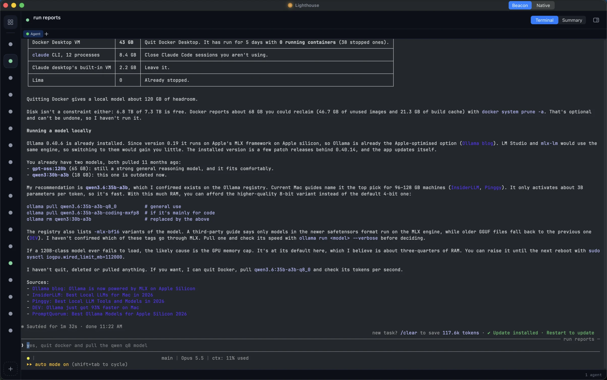
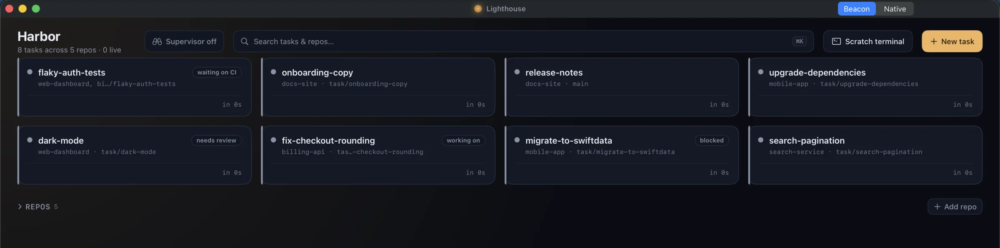

Run a fleet of coding agents without losing your bearings.
Lighthouse is a Mac app for running several Claude Code agents side by side. Each task gets its own git worktrees and a live terminal, so agents work in parallel without colliding, and you can see all of them at once.

One task is one unit of work
A task owns a git worktree for each repo it touches, or a repo's own checkout, plus a Claude Code session named after the task. Close the app and pick the session up later with a resume.
Harbor shows the whole fleet
A grid of every task with its live-session dot, a status line you write yourself, and its diff counts. Hide the tasks you're not watching, and jump to any task with ⌘K.
Focus puts one task in front
The terminal fills the window. Open the navigator for Changes, Files and History, and switch between Terminal and Summary without losing your place.

Review what the agent did, next to the agent
Changes update live against the task's base branch, with an option to show only uncommitted work. Code is syntax-highlighted and markdown opens rendered, with a toggle back to source. Everything renders offline.
- ⌘K
- Switch to any task or repo
- ⌘P
- Open a file by name
- ⇧⌘F
- Search across the task's files
- ⇧⌘H
- Back to Harbor
Tell the supervisor once
Write standing instructions in plain language. For the tasks you switch supervision on for, the supervisor reads each agent's finished turn and proposes the next prompt: a follow-up, a hand-off to another task, or a question for you.
It only proposes. Each proposal is checked again against the agent's current state before anything is typed, and a message is never sent twice.
Standing instructions
When review-doc finishes its task,
tell api-fix to run the tests.
If the tests fail, ask me before
sending anything else.
- Off until you switch it on, per task and for the supervisor
- Limits you set: spend per run and per day, runs per hour
- Halts itself after repeated failed runs
Where it stands: you confirm each proposal, and Lighthouse types it into the agent's prompt box for you to submit. Unattended delivery, where the supervisor submits the next prompt itself, is the next piece and is not built yet. Runs use your own Claude account.
It shows what it knows and nothing else
No guessed status
Lighthouse doesn't infer what an agent is doing. You set the status text, and the only automatic signal is whether a session is running.
Hooks only when asked
Supervision installs Claude Code hooks in a task's workspaces when you switch it on, and nowhere else.
No background git traffic
Lighthouse never fetches, pulls or pushes on its own. Cloning a repo and checking out a PR happen only when you ask.
Build it from source
There is no signed release yet. The app builds with Swift Package Manager and is ad-hoc signed. You need macOS 14 or later, git 2.35 or later, Xcode 26 or later, and the Claude Code CLI available in your login shell.
# clone, test, build, open
git clone https://github.com/aniruddhasd/lighthouse.git
cd lighthouse
swift test
Scripts/make-app.sh
open dist/Lighthouse.app
On first launch, Lighthouse checks for git and Claude Code, then asks you to register a repo.